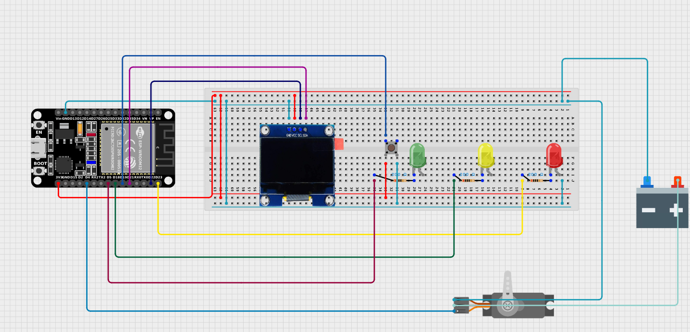

Wokwi
Instructions: Visual WOKWI Illustration of the circuit. Take a screenshot of your WOKWI/cirkitdesigner design. Provide a detailed explanation of how the device works i.e. do I push a button to do something and what happens in return. Make sure to clearly describe the inputs and expected outputs. Explain what pins you used on the ESP32 and why they were suitable by referring to the pinout and the pin features. Explain each device used and its wiring/pin connections.

The Schematic View of our Summative BOP IT GAME. The game is played with the OLED displaying the expected input (Triangle, Circle or Button). The player is expected to match the input displayed on the OLED using Dabble control for the inputs Triangle, Circle and a button on the circuit for the button input.
⚙️ Hardware Components and Connections
| Component | Pin Connection (ESP32) | Function |
|---|---|---|
| Push Button | GPIO 4 (D2) | Input to trigger action. GPIO 4 is a general-purpose digital input pin; safe for buttons and supports interrupts. |
| Green LED | GPIO 5 (D1) | To indicate the user to press the triangle. GPIO 5 is a standard digital output pin; reliable for driving LEDs. |
| Yellow LED | GPIO 18 (D5) | Indicates the user to press the BUTTON. GPIO 18 is a high-speed digital output (HSPI CLK); safe for GPIO use. |
| Red LED | GPIO 19 (D6) | To indicate the user to press circle. GPIO 19 (HSPI MISO) is also digital I/O capable; frequently used for outputs. |
| OLED Display | SDA → GPIO 21 (D21), SCL → GPIO 22 (D22) | These are the default I²C pins on ESP32 and are ideal for I2C devices like OLEDs. |
| Servo Motor | GPIO 23 (D23) | Servo output. GPIO 23 is a digital output pin with PWM capability—perfect for servo control. |
| Power Supply | External 5V + GND | Powers servo + components. VIN gives raw 5V from USB or external source,suitable for servos that need higher power. |

used for reference